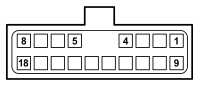

D160A DASHBOARD/OPTIONAL DASHBOARD COUPLING (OPTIONAL DASHBOARD)
- Path
- Electrical equipment > 3 CONNECTORS > D INTERMEDIATE COUPLINGS > D160 DASHBOARD/OPTIONAL DASHBOARD COUPLING > D160A DASHBOARD/OPTIONAL DASHBOARD COUPLING (OPTIONAL DASHBOARD)
- Kind
- connector pinout (pin -> wire colour -> other end)
- Applies to
- all engines; all production periods; only with equipment: Aerial on mirror
- Interactive page
- https://sloeber94.github.io/elrnDB-fDct/en/#/244002832
Applies to: all engines; all production periods; only with equipment: Aerial on mirror

Wiring | Colour |
|---|---|
BIANCO (white) |
Pin | Cable | Destination | |||
|---|---|---|---|---|---|
Sec.. | Colour | Node | Connect. | Pin | |
1 | 0,35 | AL (light blue with blue stripe) | X | See H007A CRUISE CONTROL SYSTEM CONTROL (OPTIONAL DASHBOARD) | 2 |
4 | |||||
2 | 0,5 | HG (grey with yellow stripe) | 1 | ||
3 | 0,5 | BR (white with red stripe) | See D160A DASHBOARD/OPTIONAL DASHBOARD COUPLING (OPTIONAL DASHBOARD) | 17 | |
6 | 0,75 | BL (white with blue stripe) | 1 | ||
7 | 0,5 | AR (light blue with red stripe) | See D161A OPTIONAL DASHBOARD/AIR CONDITIONING COUPLING (AIR CONDITIONING) | C | |
8 | 0,35 | AB (light blue with white stripe) | 6 | ||
9 | 0,5 | M (brown) | 2 | ||
10 | 0,5 | AR (light blue with red stripe) | See B101A OPTIONAL JUNCTION UNIT UNDER THE DASHBOARD (FRONT) | 1 | |
12 | 0,35 | GH (yellow with grey stripe) | See D016B ADDITIONAL DASHBOARD/LEFT FRONT DOOR COUPLING (OPTIONAL DASHBOARD) | 10 | |
13 | 0,5 | BN (white with black stripe) | 2 | ||
14 | 0,5 | MZ (brown with violet stripe) | 4 | ||
15 | 0,35 | BV (white with green stripe) | 13 | ||
16 | 0,5 | BR (white with red stripe) | 3 | ||
17 | 0,5 | BG (white with yellow stripe) | See D160A DASHBOARD/OPTIONAL DASHBOARD COUPLING (OPTIONAL DASHBOARD) | 3 | |
18 | 0,5 | RV (red with green stripe) | X | See D165 OPTIONAL DASHBOARD/OPTIONAL COURTESY LIGHT COUPLING | 1 |
See D017B ADDITIONAL DASHBOARD/RIGHT FRONT DOOR COUPLING (OPTIONAL DASHBOARD) | 8 | ||||
Topics linked from this page (13)
- 19 OPTIONAL DASHBOARD
- B101A OPTIONAL JUNCTION UNIT UNDER THE DASHBOARD (FRONT)
- D016B ADDITIONAL DASHBOARD/LEFT FRONT DOOR COUPLING (OPTIONAL DASHBOARD)
- D017B ADDITIONAL DASHBOARD/RIGHT FRONT DOOR COUPLING (OPTIONAL DASHBOARD)
- D097E SHORT CIRCUITING COUPLING (OPTIONAL DASHBOARD)
- D097F SHORT CIRCUITING COUPLING (OPTIONAL DASHBOARD)
- D097L SHORT CIRCUITING COUPLING (OPTIONAL DASHBOARD)
- D161A OPTIONAL DASHBOARD/AIR CONDITIONING COUPLING (AIR CONDITIONING)
- D165 OPTIONAL DASHBOARD/OPTIONAL COURTESY LIGHT COUPLING
- H007A CRUISE CONTROL SYSTEM CONTROL (OPTIONAL DASHBOARD)
- H090C SWITCH CONTROL PANEL (OPTIONAL DASHBOARD)
- M035 ALARM REMOTE CONTROL RECEIVER
- M120D Connect front panel (OPTIONAL DASHBOARD)
Topics that link to this page (43)
- B002C JUNCTION UNIT UNDER DASHBOARD (DASHBOARD)
- D001B FRONT/DASHBOARD COUPLING (DASHBOARD)
- D016B ADDITIONAL DASHBOARD/LEFT FRONT DOOR COUPLING (OPTIONAL DASHBOARD)
- D017B ADDITIONAL DASHBOARD/RIGHT FRONT DOOR COUPLING (OPTIONAL DASHBOARD)
- D025 DASHBOARD/LEFT REAR COUPLING (DASHBOARD)
- D026 DASHBOARD/RIGHT REAR COUPLING (DASHBOARD)
- D097D SHORT CIRCUITING COUPLING (DASHBOARD)
- D097E SHORT CIRCUITING COUPLING (OPTIONAL DASHBOARD)
- D097E SHORT CIRCUITING COUPLING (OPTIONAL DASHBOARD)
- D097E SHORT CIRCUITING COUPLING (OPTIONAL DASHBOARD)
- D097E SHORT CIRCUITING COUPLING (OPTIONAL DASHBOARD)
- D097E SHORT CIRCUITING COUPLING (OPTIONAL DASHBOARD)
- D097F SHORT CIRCUITING COUPLING (OPTIONAL DASHBOARD)
- D097F SHORT CIRCUITING COUPLING (OPTIONAL DASHBOARD)
- D097L SHORT CIRCUITING COUPLING (OPTIONAL DASHBOARD)
- D097L SHORT CIRCUITING COUPLING (OPTIONAL DASHBOARD)
- D097L SHORT CIRCUITING COUPLING (OPTIONAL DASHBOARD)
- D097L SHORT CIRCUITING COUPLING (OPTIONAL DASHBOARD)
- D097L SHORT CIRCUITING COUPLING (OPTIONAL DASHBOARD)
- D160A DASHBOARD/OPTIONAL DASHBOARD COUPLING (OPTIONAL DASHBOARD)
- D161A OPTIONAL DASHBOARD/AIR CONDITIONING COUPLING (OPTIONAL DASHBOARD)
- D165 OPTIONAL DASHBOARD/OPTIONAL COURTESY LIGHT COUPLING (OPTIONAL DASHBOARD)
- D165 OPTIONAL DASHBOARD/OPTIONAL COURTESY LIGHT COUPLING (OPTIONAL DASHBOARD)
- D165 OPTIONAL DASHBOARD/OPTIONAL COURTESY LIGHT COUPLING (OPTIONAL DASHBOARD)
- D165 OPTIONAL DASHBOARD/OPTIONAL COURTESY LIGHT COUPLING (OPTIONAL DASHBOARD)
- E050E INSTRUMENT PANEL (DASHBOARD)
- H007A CRUISE CONTROL SYSTEM CONTROL (OPTIONAL DASHBOARD)
- H007A CRUISE CONTROL SYSTEM CONTROL (OPTIONAL DASHBOARD)
- H007A CRUISE CONTROL SYSTEM CONTROL (OPTIONAL DASHBOARD)
- H007A CRUISE CONTROL SYSTEM CONTROL (OPTIONAL DASHBOARD)
- H007A CRUISE CONTROL SYSTEM CONTROL (OPTIONAL DASHBOARD)
- H007A CRUISE CONTROL SYSTEM CONTROL (OPTIONAL DASHBOARD)
- H090C SWITCH CONTROL PANEL (OPTIONAL DASHBOARD)
- H090C SWITCH CONTROL PANEL (OPTIONAL DASHBOARD)
- H090C SWITCH CONTROL PANEL (OPTIONAL DASHBOARD)
- H090C SWITCH CONTROL PANEL (OPTIONAL DASHBOARD)
- H090C SWITCH CONTROL PANEL (OPTIONAL DASHBOARD)
- I030 BRAKE PEDAL SWITCH (DASHBOARD)
- M035 ALARM REMOTE CONTROL RECEIVER (OPTIONAL DASHBOARD)
- M120D Connect front panel (OPTIONAL DASHBOARD)
- M120D Connect front panel (OPTIONAL DASHBOARD)
- M120D Connect front panel (OPTIONAL DASHBOARD)
- R010 MULTIPLE TESTER CONNECTION (DASHBOARD)